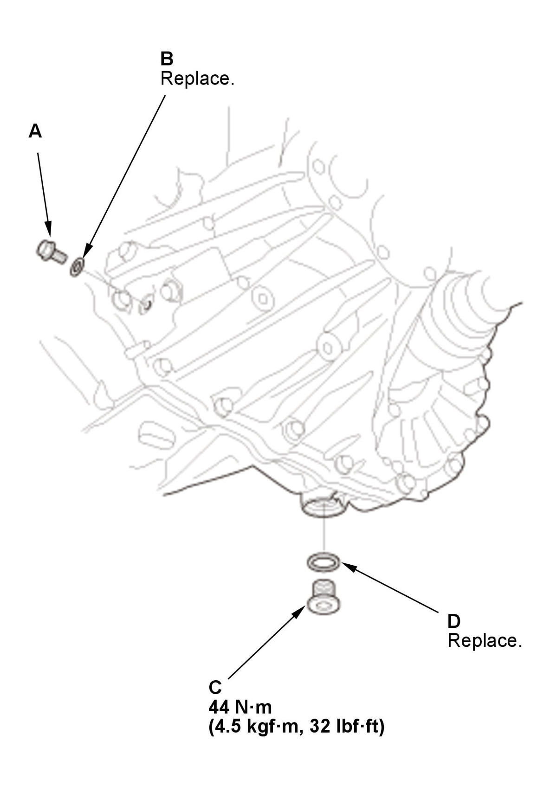
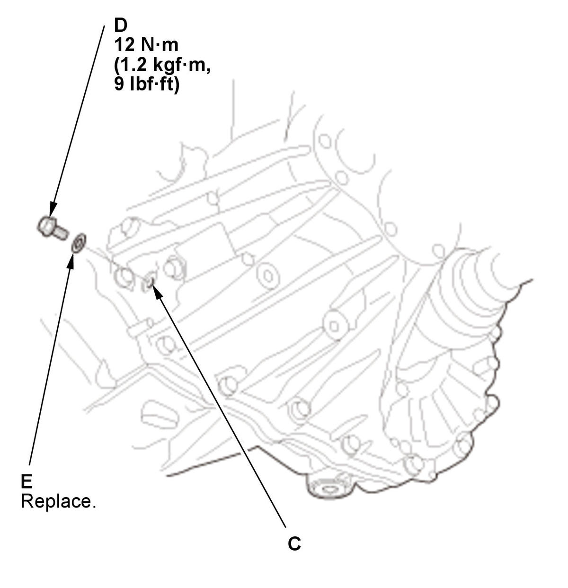
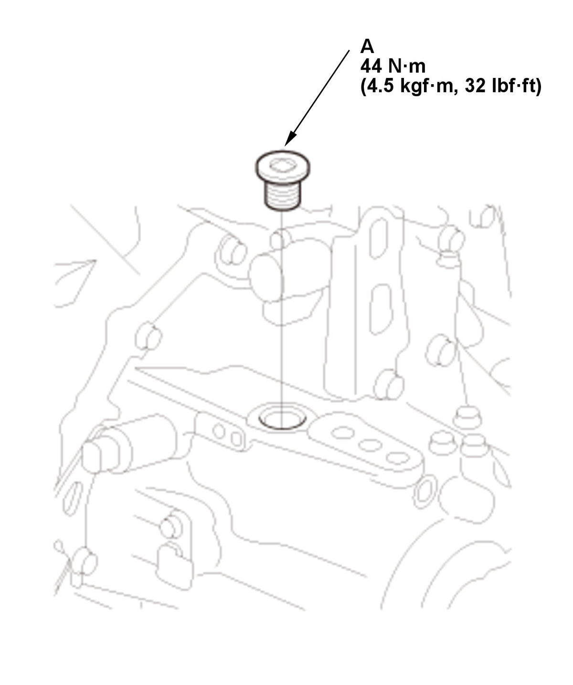

MTF Inspection and Replacement (Except K20C1 (M/T)): Replacement
- Air Cleaner - Remove
- Vehicle - Lift
- Engine Undercover Plate - Remove
- MTF - Drain

Courtesy of HONDA, U.S.A., INC.1. Remove the oil check bolt (A) and the 6 mm sealing washer (B). 2. Remove the drain plug (C) and the 20 mm sealing washer (D), and drain the MTF.
3. Install the drain plug with a new 20 mm sealing washer.
- MTF - Refill

Courtesy of HONDA, U.S.A., INC.1. Remove the filler plug (A). 2. Refill the MTF through the filler plug hole (B) on the transmission, until the MTF overflows from the oil check bolt hole (C). Always use Honda Manual Transmission Fluid (MTF).
3. After the fluid stops overflowing, install the oil check bolt (D) with a new 6 mm sealing washer (E).
Fluid Capacity: 1.9 L (2.0 US qt) at fluid change 2.0L (2.1 US qt) at overhaul - Filler Plug - Install

Courtesy of HONDA, U.S.A., INC.1. Clean any dirt and oil from the sealing surface of the filler plug (A) and the transmission housing. 2. Apply liquid gasket (P/N 08718-0003, 08718-0004, or 08718-0009) to the threads of the filler plug. Install the filler plug within 5 minutes of applying the liquid gasket.
NOTE: If too much time has passed after applying the liquid gasket, remove the old liquid gasket and residue, then reapply new liquid gasket.
- All Removed Parts - Install
1. Install the parts in the reverse order of removal. - Maintenance Minder - Reset (With Maintenance Minder System)
If the Maintenance Minder required to replace the MTF, reset the Maintenance Minder with the gauge (see "Resetting the Maintenance Minder"). If the Maintenance Minder did not require to replace the MTF, reset the Maintenance Minder with the HDS (see "Resetting the Individual Maintenance Items").